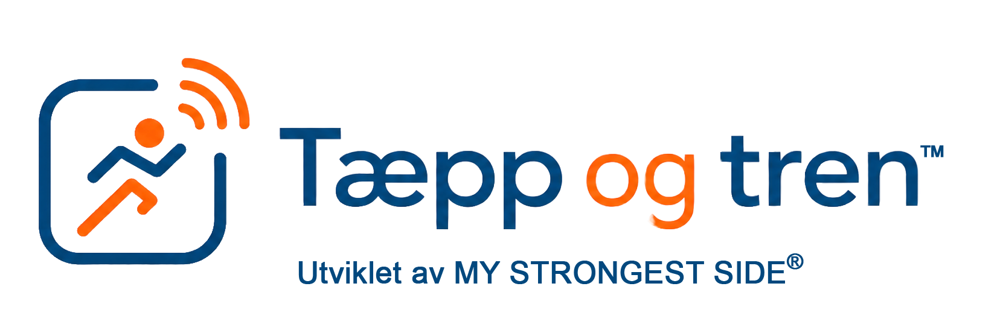
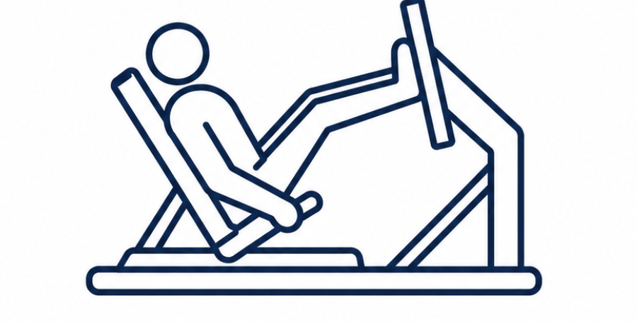
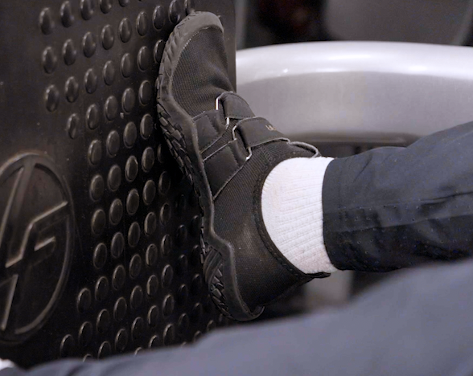
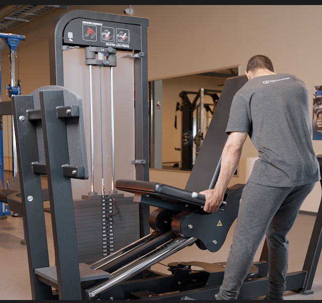

Video
Grunnveiledningsvideo
Teksting er på som standard. Bruk knappen over videoen for å vise eller skjule teksting.


NFC bekreftet
Du har skannet platen ved beinpress. Her kan du se veiledning, velge en vanlig utfordring eller starte registrering av økten.
NFC BEKREFTET
Velg grunnveiledning, en vanlig utfordring eller start økten når du er klar.
Fot er forhåndsvalgt som standard alternativ. Siden vet ikke automatisk hva du trenger. Bekreft fot, eller velg et annet alternativ som passer bedre før du går videre.
Grunnveiledning
Video
Teksting er på som standard. Bruk knappen over videoen for å vise eller skjule teksting.
Plasser rygg og sete slik at du kjenner støtte før du starter.
Plasser føttene med god kontakt mot platen. Start rolig.
Hold jevn bevegelse og stopp hvis smerte eller utrygghet øker.
Anbefalt start for nybegynner
Start med 1 til 2 sett og 8 til 10 repetisjoner.
Velg en lett motstand der du klarer å holde god kontroll gjennom hele bevegelsen. Målet i starten er å bli trygg på øvelsen, kjenne hvordan apparatet fungerer og finne en belastning som passer for deg.
Belastningen bør være så lett at øvelsen er mulig å gjennomføre med kontroll, men samtidig litt krevende. En fin regel er at du skal ha cirka 2 til 4 repetisjoner igjen i reserve når settet er ferdig.
Dersom du klarer 2 sett med 10 repetisjoner med god kontroll, kan du øke vekten litt neste gang.
Velg det du kjenner igjen
Kan gi ustabilitet, skeiv belastning eller mindre kontroll.

02Kan gjøre presset mindre stabilt og vanskeligere å kontrollere.
Kan påvirke kraftretning, trygghet og opplevd kontroll.
Kan skyldes nedsatt grepstyrke og eller sensibilitet.
Kan skyldes nedsatt aktiv bevegelighet i skulder og albue.
Kontrakturer kan gjøre det vanskelig å holde rundt håndtaket.
Nedsatt syn kan påvirke posisjon, håndtak og fotplassering.
Hofte kan påvirke sittestilling, fotplassering og bevegelsesutslag.
Kan handle om forståelse, rekkefølge eller flere instrukser samtidig.
Start med lav belastning, kort bevegelse og tydelig stoppregel.

02Kan oppleves utrygt dersom setet står lavt, avstanden er stor eller håndtakene er vanskelige å bruke.